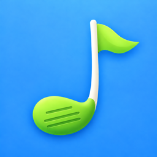

CartDJ
The shared music app for your golf round.
CartDJ Privacy Policy
Last updated: November 3, 2026
CartDJ lets golfers sharing a cart control one Apple Music stream together. This policy explains what the app collects, why, and what it does not do.
What CartDJ collects
An anonymous account ID. The first time you start or join a round, CartDJ creates a random account ID for your device. It contains no personal information. It lets the app tell golfers in a round apart.
What you choose to enter. Your first name or nickname, and optionally a profile picture. Your name is stored with the song requests you make. Your name and profile picture are sent to the other golfers in your round so they can see them, and are stored on our server with your profile so that people who add you as a friend see your current name and picture on their friends list. Friends are one way: someone who played a round with you can add you without being asked, and they see only your name, picture, and the Cart Chemistry the two of you built in rounds together. Deleting your account removes your profile and your friends list.
What happens in a round. The songs requested, skip votes, hearts and thumbs down, and which songs played or were skipped, along with which golfers were in the round. If a guest mixes in one of their own playlists, its song list is sent to the host's phone for that round. This is what powers Cart Chemistry, the match score and song suggestions for golfers who play together.
Reports and blocks. If you report someone, we store who reported whom, in which round, the reason you picked, and any details you add, so we can review it. If you block someone, we store that you blocked them, so neither of you can join the other's rounds. Only you can see who you have blocked, and you can unblock them on the Profile screen.
What the host's phone saves during a round. While hosting, the app saves what is playing and what is coming up about once a minute, so a guest who joins sees it straight away. It does not record anything about the device, such as its battery or location.
If you choose Sign in with Apple. Apple gives us an identifier for your Apple ID and an email address, which may be a private relay address if you choose to hide your email. These are attached to your existing account ID so your rounds stay with you if you change phones. Signing in is optional.
What stays on your device
- Your Apple Music library. If you ask to see your music taste, CartDJ reads your library and recent plays on your device to show your top artists and genres. That information is not uploaded.
- Camera. The camera is used only to scan a round's QR code. No photos or video are saved or sent.
- Photos. When you choose a profile picture, only the single picture you pick is used, reduced to a small thumbnail.
What CartDJ does not do
- No advertising and no tracking across apps or websites.
- No selling or sharing of your data with data brokers or advertisers.
- No access to your contacts, location, or microphone.
Who processes the data
Round data is stored with Supabase, our database provider, which processes it on our behalf. Music is streamed by Apple Music directly to the host's phone under Apple's own terms and privacy policy; CartDJ never handles the audio.
Keeping and deleting your data
Round data is kept so Cart Chemistry can build up over time. You can delete your account and its data at any time in the app: open Profile and tap Delete account. You can also ask for your data to be deleted by emailing the address below from any address; tell us the name you used in the app. If you never sign in, your data is tied only to the anonymous ID on your device, and deleting the app removes that ID from your phone.
Children
CartDJ is not directed at children under 13 and does not knowingly collect information from them.
Changes
If this policy changes, the date at the top will change and the new version will be posted at the same address.
Contact: cartdjapp@gmail.com